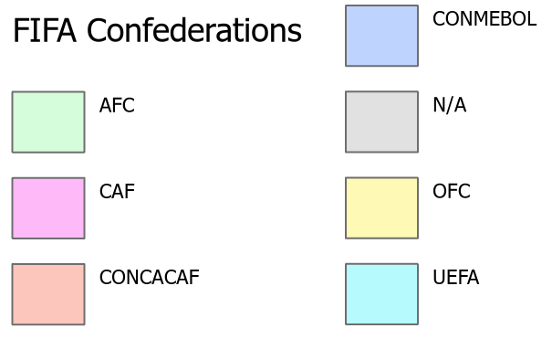

Final Project: Mapping the World Cup
Legend
About the map
The FIFA World Cup is a global soccer tournament that takes place every four years, with teams from around the world competing for the prestigious title of World Cup champion. The tournament has a long and storied history, dating back to its first iteration in 1930. This map shows all of the stadiums used through out the history of the tournment. It also shows the six different FIFA Confederations and the host nations.